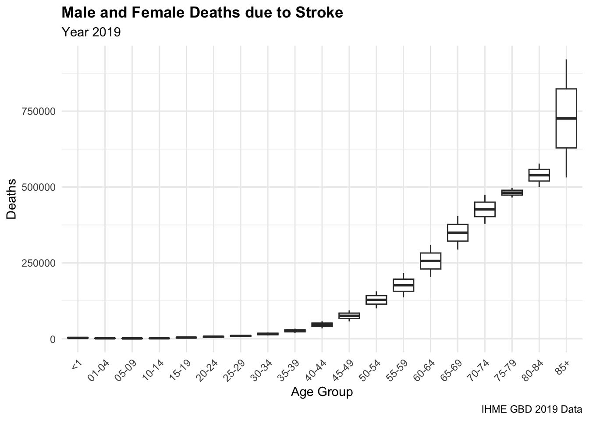
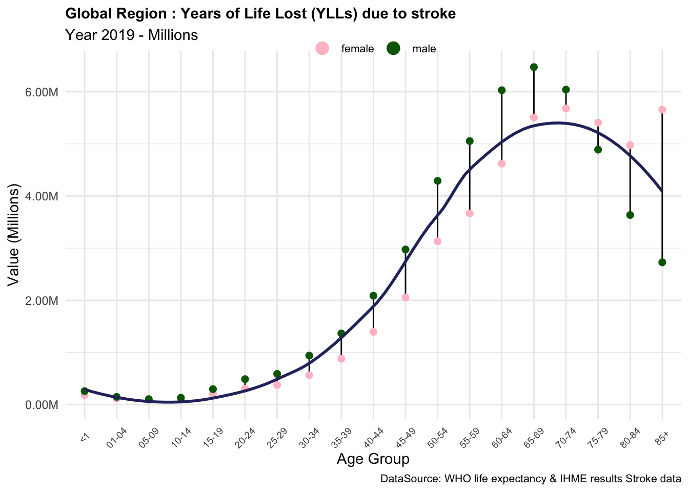
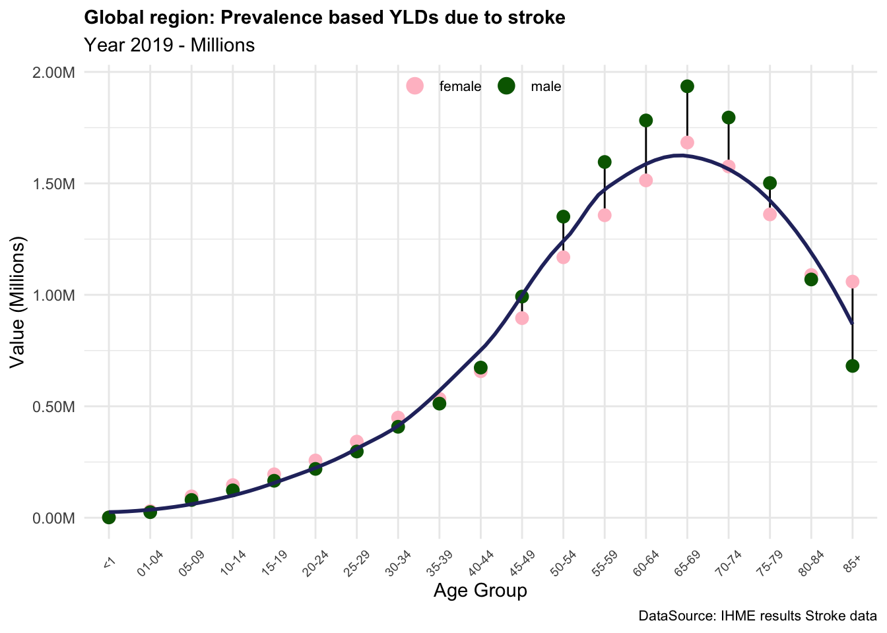
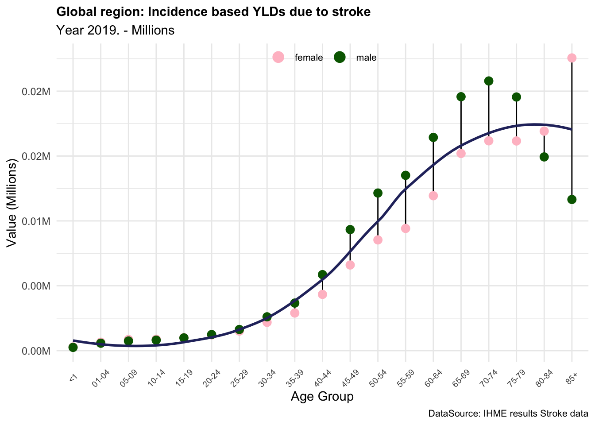
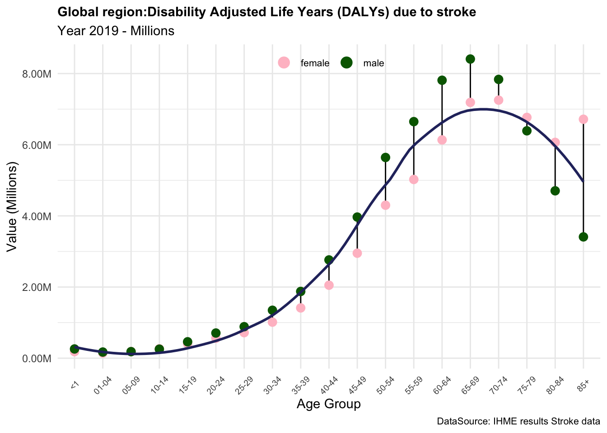
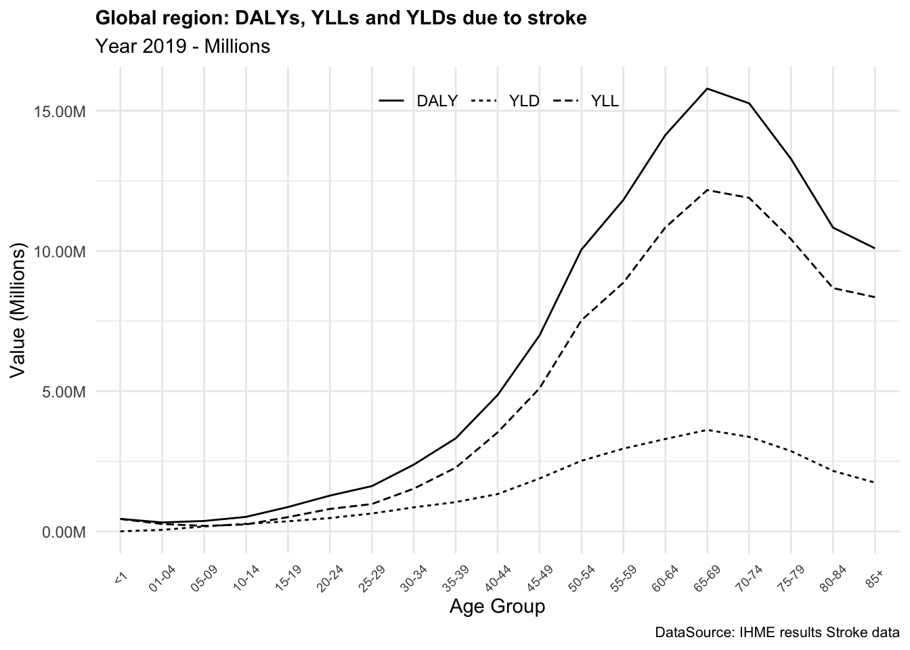
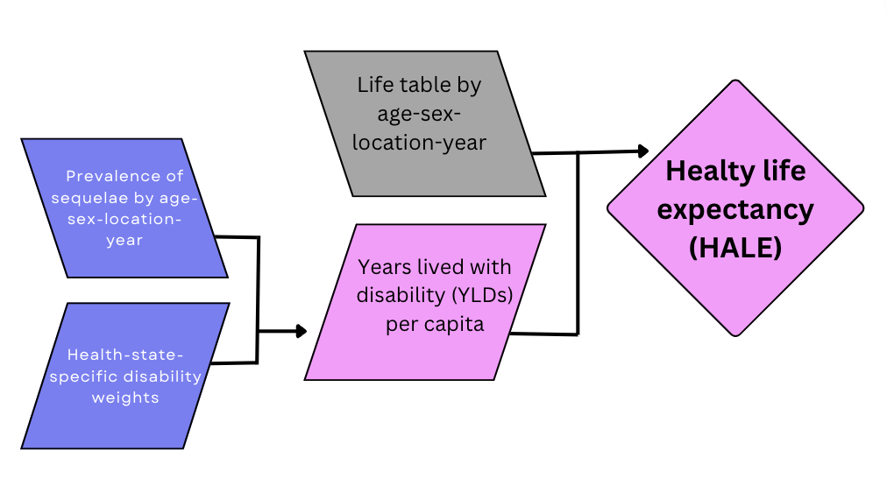
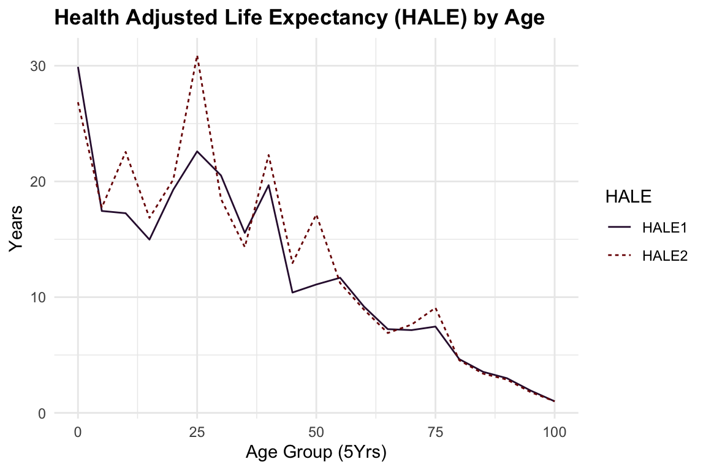

install.packages("hmsidwR")
# install.packages("devtools")
devtools::install_github("Fgazzelloni/hmsidwR")3 Methods and Calculations
Learning Objectives
- Explore key health metrics and their significance in public health analysis
- Learn how to apply and interpret these metrics using real-world data
- Identify opportunities to improve health metrics and their use in decision-making
The objective of this chapter is to provide a first level calculation of the burden of diseases, focusing on disability and premature mortality, which are captured by DALYs and HALE. In Chapter 2, we defined the metrics to establish the theoretical framework for constructing them. In this chapter, we will proceed with a general calculation of YLLs and YLDs to obtain the DALYs. This step is essential for understanding the structure of the metric components, which will be further investigated in Chapter 4.
Used to measure the burden of disease and quantify the impact of diseases and injuries on individuals and populations, these metrics can help prioritise public health interventions and evaluate the effectiveness of public health programs.
3.1 YLLs Calculation
The Years of Life Lost (YLLs) is a metric that measures the number of years a person would have lived if they had not died prematurely due to a disease or injury. YLLs are calculated by subtracting the age at death from the expected age at death in a population without the disease or injury.
In the late 1940s (Chapter 2), William Haenszel1 introduced the concept of Standardized Rate for Mortality in units of Lost Years of Life, marking an early attempt to quantify the impact of premature mortality. This approach emphasized the importance of considering the age at death and comparing it to the expected life expectancy, highlighting that early deaths have a greater impact than those occurring later in life. It was ascertained that accounting for the number of years lost for a group of people would help recognise the potential life lost for a certain cause. Since this first approach, some adjustments to the standard death rates were made, leading to a new calculation that considered standardised death rates applied to age-specific factors for specific causes of death.
Building on these ideas, Mary Dempsey2 formalised the concept in 1947 to assess the burden of tuberculosis, coining the term Years of Life Lost (YLLs). This metric was specifically designed to identify areas requiring improvement to reduce health loss and prevent premature death.3 Her work established YLLs as a critical tool for understanding and addressing the disproportionate effects of early mortality on population health.
The impact of premature losses on society extends beyond the grief of losing a loved one; it also includes the economic and social cost of losing productive members of the workforce. Such premature deaths lead to a significant burden on the community, affecting overall economic stability and societal well-being.
Standard Formula
YLL=N*le \tag{3.1}
In Equation 3.1, N is the number of premature deaths, and le is the standard life expectancy at the age of death. This calculation takes into account the number of deaths at each age and multiplies it by the standard life expectancy remaining at that age, using global life tables to determine life expectancy. More details about the components of YLLs are provided in the next chapter (Chapter 4), and a sample of the construction of a life table with relative estimations of the life expectancy can be found in Appendix A.
In general, the Global Burden of Disease studies (GBD) use standardised life tables, to consistently measure the impact of various diseases. This approach allows for reliable comparisons across different conditions and populations, providing a comprehensive assessment of disease burden on a global scale.4 Additionally, country-specific life expectancies are valuable for investigating premature deaths resulting from health-related causes, such as fatal diseases. For instance, certain types of country-specific life expectancies are frequently recommended due to their ability to provide insight into longevity characteristics, which can inform policymakers and aid in prevention efforts, as exemplified by the Japanese life expectancy.5 A G7 cross-country study demonstrated that Japan has the longest average life expectancy, primarily attributed to significantly low mortality rates from ischemic heart disease and cancer, which are the leading causes of death in most countries, as indicated by the GBD study.
3.1.1 Example: YLLs due to Stroke
Stroke can be a consequence of several infectious diseases, such as COVID-19, Tuberculosis (TB), and Malaria. The impact of these diseases on the cardiovascular system can lead to stroke, as infections can cause inflammation, blood clot formation, or direct damage to blood vessels.
In the following example, we calculate the YLLs due to stroke in the year 2019 for the Global region. We use the data from the Global Burden of Disease (GBD) study, which provides estimates of the number of deaths due to stroke in different regions. The data can be downloaded from the {hmsidwR} package, which contains the necessary datasets for this calculation. The deaths2019 dataset comprises 2754 observations and 7 variables, containing the estimated number of deaths due to 9 causes, including stroke, across 6 regions: Global, France, Italy, Germany, the United Kingdom, and the United States. We also use the Global Health Observatory Life Tables to estimate the life expectancy at different ages, which is used to calculate the YLLs due to stroke.
library(tidyverse)
library(hmsidwR)unique(hmsidwR::deaths2019$cause)
#> [1] "Lower respiratory infections"
#> [2] "Stroke"
#> [3] "Chronic obstructive pulmonary disease"
#> [4] "Road injuries"
#> [5] "Diabetes and kidney diseases"
#> [6] "Colon and rectum cancer"
#> [7] "Tracheal, bronchus, and lung cancer"
#> [8] "Breast cancer"
#> [9] "Alzheimer's disease and other dementias"Our specific task is to calculate the Years of Life Lost (YLLs) attributable to stroke in the year 2019 for the Global region. We filter the location to be “Global” and the cause to be “Stroke”. The use of str_detect() is to match the cause of death containing a specific word, it is very useful when the cause of death is not exactly containing just one word.
deaths_stroke <- hmsidwR::deaths2019 %>%
arrange(age)%>%
filter(location == "Global",
str_detect(cause, "Stroke")) %>%
select(-location, -cause, -upper, -lower)
deaths_stroke %>% head()
#> # A tibble: 6 × 3
#> sex age dx
#> <chr> <ord> <dbl>
#> 1 male <1 3640.
#> 2 female <1 2404.
#> 3 both <1 6044.
#> 4 male 01-04 2049.
#> 5 female 01-04 1505.
#> 6 both 01-04 3553.Then, we visualise the number of deaths due to stroke by age group, with a geom_boxplot(). The boxplot shows the distribution of the number of deaths by age group, with the median, quartiles, and outliers. The plot is divided by age group and shows the variation in the number of deaths due to stroke between gender as it is stratified by gender, highlighting variations in stroke mortality between males and females. We can observe the difference in the number of deaths increases for older age groups.
deaths_stroke %>%
filter(!sex == "both") %>%
ggplot(aes(x = age,y = dx)) +
geom_boxplot() +
labs(title = "Male and Female Deaths due to Stroke",
subtitle = "Year 2019",
caption = "IHME GBD 2019 Data",
x = "Age Group", y = "Deaths") +
theme(axis.text.x = element_text(angle = 45, hjust = 1))
Among the indicators available in the hmsidwR::gho_lifetables dataset, we specifically focus on the indicator denoted as e_x. The expectation of life at age x (e_x) refers to the average number of additional years a person is expected to live, given that they have already reached age x. This measure is commonly referred to as life expectancy at age x. This dataset is part of the Global Health Observatory (GHO) data repository, which is maintained by the World Health Organization (WHO). The dataset also contains life table indicators, such as the number of person-years lived above age x (l_x), the number of person-years lived between ages x and x+n (_{n}L_x), the age-specific death rate between ages x and x+n (_{n}M_x), the number of people dying between ages x and x+n (_{n}d_x), and the probability of dying between ages x and x+n (_{n}q_x).
| Indicator | Description |
|---|---|
| Tx | person-years lived above age x |
| ex | expectation of life at age x |
| lx | number of people left alive at age x |
| nLx | person-years lived between ages x and x+n |
| nMx | age-specific death rate between ages x and x+n |
| ndx | number of people dying between ages x and x+n |
| nqx | probability of dying between ages x and x+n |
We use the estimated value of the expected life for 5-year age groups, such as <1, ... , 05-09, 10-14, etc. for both females and males.
On the other hand, the standard life expectancy represents the maximum number of years a person is expected to live from birth. For example, according to estimates released in 2021 by the United Nations Population Division, the Japanese life expectancy at birth is approximately 84.6 years. This figure is significantly higher than the global average life expectancy of around 72.6 years.
To calculate the YLLs due to stroke, we need to use the life expectancy at different ages. We filter the gho_lifetables dataset to year 2019, which is the most updated year available for the life expectancy data, and select the indicator ex to get the life expectancy at different ages, renaming it as le.
ex2019 <- hmsidwR::gho_lifetables %>%
filter( year == 2019, indicator == "ex") %>%
select(-indicator, -year) %>%
rename(le = value)
ex2019 %>% head()
#> # A tibble: 6 × 3
#> age sex le
#> <ord> <chr> <dbl>
#> 1 <1 male 70.8
#> 2 <1 female 75.9
#> 3 <1 both 73.3
#> 4 01-04 male 72.0
#> 5 01-04 female 76.9
#> 6 01-04 both 74.4Then we merge the deaths_stroke with the ex2019 data to calculate the YLLs due to stroke in the Global region with the full_join() function, and group the data by age and sex before to create one more vector named YLL, which is the product of the number of deaths and the life expectancy at that age. These YLLs values are expressed in millions, and are not necessarily the real values, but estimated values. Their values are strongly dependent on the life expectancy and the number of deaths due to stroke, also other adjustments can be made to the life expectancy values to get more accurate results. In the past, the calculation of YLLs included the use of a discount rate, which is no longer used in the most recent calculations.
YLL_global_stroke <- deaths_stroke %>%
full_join(ex2019) %>%
group_by(age, sex) %>%
mutate(YLL = dx * le) %>%
ungroup()YLL_global_stroke %>% head()
#> # A tibble: 6 × 5
#> sex age dx le YLL
#> <chr> <ord> <dbl> <dbl> <dbl>
#> 1 male <1 3640. 70.8 257916.
#> 2 female <1 2404. 75.9 182396.
#> 3 both <1 6044. 73.3 443136.
#> 4 male 01-04 2049. 72.0 147563.
#> 5 female 01-04 1505. 76.9 115680.
#> 6 both 01-04 3553. 74.4 264428.
Based on these results, we can conclude that the components of YLLs due to stroke are essential measures of the impact of this condition on the quality of life of individuals in the Global region. The YLLs due to stroke are particularly high in older age groups, where the number of deaths is higher, and the life expectancy is lower. This indicates that stroke has a significant impact on the overall burden of disease in the Global region, particularly among older populations.
3.1.2 Exercise: All-Ages YLLs Estimation
Calculate the YLLs due to stroke in the Global region for All-ages, and compare the results with the IHME data for the year 2019.
The YLLs due to stroke in the Global region in 2019-IHME data can be downloaded from the healthdata.org, with 2019 data reflecting the updates of 2021 GDB releases.
The stroke_ihme6 dataset contains the estimated values for the numbers, percent and rates of Deaths, DALYs, YLLs, and YLDs due to stroke in the Global region-All ages and Age-standardized, for years 2019 and 2021.
Filtering the data for the year 2019-All Ages, we can visualise only the values of all metrics due to stroke in the Global region, as shown below.
stroke_ihme %>%
mutate(across(where(is.numeric), ~round(., 2))) %>%
filter(year == 2019,
age == "All ages") %>%
select(metric, DALYs, YLDs, YLLs)
#> # A tibble: 3 × 4
#> metric DALYs YLDs YLLs
#> <chr> <dbl> <dbl> <dbl>
#> 1 Number 156261906. 14462764. 141799142.
#> 2 Percent 0.06 0.02 0.08
#> 3 Rate 2018. 187. 1831.In the Global region, YLLs (Years of Life Lost) due to stroke for all age groups total 141.799 million years, accounting for 8% of the total disease burden. On average, approximately 1,830 years of life were lost prematurely due to stroke for every 100,000 people in the population.
To calculate the YLLs due to stroke in the Global region for All-ages use the Table 3.2 datasets, and compare the results with the IHME data for the year 2019. As estimated by the IHME for the year 2019, this calculation is based on the number of deaths caused by stroke and the corresponding life expectancy at different ages, which together determine the YLLs attributable to stroke.7
Note that the values are not necessarily the real values, but estimated values. Their values are strongly dependent on the life expectancy and the number of deaths due to stroke, also other adjustments can be made to the life expectancy values to get more accurate results. In the past, the calculation of YLLs included the use of a discount rate, which is no longer used in the most recent calculations.
3.2 YLDs Calculation
YLDs (Years Lived with Disability) measure the number of years a person lives with a disability due to a disease or injury. It is calculated by multiplying the prevalence of a condition by the disability weight, which reflects the severity of the disability.
The key factor of the disability weights (DW) is linked to the severity (mean of the range of health loss suffered to disease) of a non-fatal health condition due to disease or injury. DW ranges between 0 (equivalent to full health) and 1 (equivalent to death). The estimation of the disability weights is challenging and has been continuously changed by modifying and adapting methodologies in various studies.8 The challenge is assigning disability weights to diseases with different levels of prevalence and severity, such as cases with high prevalence and low severity. People’s experiences of the same condition can vary significantly, making it difficult to establish a Standardised weight that accurately reflects the global impact on quality of life. Furthermore, the results need to be reported to a year-based value.
Moreover, the calculation of YLDs has been updated over the years, shifting from an incidence to a prevalence-based approach. More in-depth analyses are in Chapter 4; for now, we will show how both types of calculations differ, but then we will focus on using the most updated approach based on values of prevalence estimated by the GBD2021, summarised in the hmsidwR::incprev_stroke dataset. This dataset specifically contains the estimated values for the incidence and prevalence of stroke in the Global region for the years 2019 and 2021.
3.2.0.1 Incidence-based Calculation
Standard Formula
YLD_i=I*DW*L \tag{3.2}
In Equation 3.2, I is the incidence of the condition, DW is the disability weight, and L is the average duration of the condition. The incidence takes into account the number of new cases of a disease or health condition that occur in a population over a specific period. The disability weight reflects the severity of the health condition, and the average duration of the condition is the average length of time a person lives with the condition.
3.2.0.2 Prevalence-based Calculation
Standard Formula
YLD_p=p*DW \tag{3.3}
In Equation 3.3, p is the prevalence, DW are the disability weights. While an incidence-based approach focuses on the number of new cases of a health condition, the prevalence-based approach considers the total number of cases in the population. The disability weight reflects the severity of the health condition and it is applied to the prevalence to calculate the YLDs, and the duration of the condition is not considered in the prevalence-based calculation.
3.2.1 Example: YLDs due to Stroke
Since the release of GBD 2010, the WHO has decided to switch to a prevalence-based approach for the calculation of YLDs. The major impact of this shift is to distribute the weights of the YLDs more evenly across all age groups, rather than concentrating them at the age of incidence.
In the following example we use the disability weights and the severity levels extracted from a dataset in the GBD study. The disweights dataset is stored in the {hmsidwR} package and is made of 463 observations and 9 variables. It contains the estimated values for the disability weights, which are measured on a scale from 0 to 1, where 0 equals a state of full health and 1 equals death.
hmsidwR::disweights %>%
filter(year == 2019) %>%
group_by(cause1, severity) %>%
reframe(dw = mean(dw)) %>%
filter(cause1 == "Stroke")
#> # A tibble: 3 × 3
#> cause1 severity dw
#> <chr> <chr> <dbl>
#> 1 Stroke mild 0.019
#> 2 Stroke moderate 0.193
#> 3 Stroke severe 0.57The level of severity is assigned based on the degree of disability assessed by the National Institutes of Health Stroke Scale (NIHSS). The classification is used by healthcare providers to objectively quantify the impairment caused by a stroke. Here is assumed a sample population affected by a stroke, categorised as mild, moderate, or severe with assigned proportions.
| Score | Stroke severity | Severity Level | Severity % |
| 0-4 | Minor stroke | Mild | 50.3% |
| 5–20 | Moderate stroke | Moderate | 25.3% |
| 21-42 | Severe stroke | Severe | 24.4% |
These levels are general for all ages; the values might vary for other specifications of the level of disability.9
dwsev2019 <- hmsidwR::disweights %>%
select(cause1, severity, dw) %>%
drop_na() %>%
mutate(severity_n = case_when(
severity == "mild" ~ 0.503,
severity == "moderate" ~ 0.253,
severity == "severe" ~ 0.244))
dwsev2019 %>% head()
#> # A tibble: 6 × 4
#> cause1 severity dw severity_n
#> <chr> <chr> <dbl> <dbl>
#> 1 Infectious disease mild 0.006 0.503
#> 2 Infectious disease moderate 0.051 0.253
#> 3 Infectious disease mild 0.006 0.503
#> 4 Infectious disease mild 0.006 0.503
#> 5 Infectious disease mild 0.006 0.503
#> 6 Infectious disease mild 0.006 0.503The values for disability weights and severity are considered for all ages; in general, they differ by age, and for different types of stroke.
dw_stroke <- dwsev2019 %>%
filter(cause1 == "Stroke") %>%
group_by(severity, severity_n) %>%
reframe(avg_dw = mean(dw))
dw_stroke
#> # A tibble: 3 × 3
#> severity severity_n avg_dw
#> <chr> <dbl> <dbl>
#> 1 mild 0.503 0.206
#> 2 moderate 0.253 0.293
#> 3 severe 0.244 0.632Then, calculate the part of the population affected by a specific level of severity considering the prevalence (and/or the incidence) multiplied by the severity levels.
For instance, here we use the incprev_stroke and the dw_stroke datasets to calculate the YLDs due to stroke, and have a look at how incidence and prevalence differ from each other.
Let’s consider the numbers of incidence and prevalence, and assign them as two separate vectors in a new dataset named inc_prev_stroke_5y. We use the pivot_wider() function to spread the data into a wider format, with the measure column as the key column and the val column as the value column.
inc_prev_stroke_5y <- hmsidwR::incprev_stroke %>%
filter(year == 2019) %>%
select(measure, sex, age, val) %>%
pivot_wider(names_from = "measure", values_from = "val")Let’s check the values for the age group 35-39.
inc_prev_stroke_5y %>%
arrange(sex) %>%
filter(age == "35-39")
#> # A tibble: 3 × 4
#> sex age Prevalence Incidence
#> <chr> <ord> <dbl> <dbl>
#> 1 both 35-39 3147689. 257815.
#> 2 female 35-39 1606182. 113831.
#> 3 male 35-39 1541507. 143984.Then, multiply these values for the severity levels for stroke in the Global region. In this way we obtain three values, one for each severity level.
For calculating the prevalence-based YLDs, we use the prevalence values, the severity and the average weights, while for incidence-based YLDs, we also need to consider the average duration of the condition.
In particular, for stroke, the average duration of the condition can vary based on:
- duration for acute stroke: up to 28 days
- duration for chronic stroke: beyond 28 days, often modelled for long-term consequences, sometimes up to the lifetime of the patient depending on the model used.
In this example, we consider the average duration of the condition for 28 days. It does need to be converted to be year-based:
\hat{L}_{stroke}= \frac{28}{365} \tag{3.4}
These values strongly depend on the disability weights and the severity values assigned to the condition.
YLD_by_severity <- merge(inc_prev_stroke_5y, dw_stroke) %>%
group_by(sex, age, avg_dw) %>%
reframe(prev_sev = Prevalence*severity_n,
inc_sev = Incidence*severity_n,
yld_p = prev_sev* avg_dw,
yld_i = inc_sev* avg_dw * 28/365)Let’s check the values for the age group 35-39.
YLD_by_severity %>%
filter(age == "35-39")
#> # A tibble: 9 × 7
#> sex age avg_dw prev_sev inc_sev yld_p yld_i
#> <chr> <ord> <dbl> <dbl> <dbl> <dbl> <dbl>
#> 1 both 35-39 0.206 1583288. 129681. 326847. 2054.
#> 2 both 35-39 0.293 796365. 65227. 233379. 1466.
#> 3 both 35-39 0.632 768036. 62907. 485262. 3049.
#> 4 female 35-39 0.206 807910. 57257. 166781. 907.
#> 5 female 35-39 0.293 406364. 28799. 119087. 647.
#> 6 female 35-39 0.632 391908. 27775. 247616. 1346.
#> 7 male 35-39 0.206 775378. 72424. 160066. 1147.
#> 8 male 35-39 0.293 390001. 36428. 114292. 819.
#> 9 male 35-39 0.632 376128. 35132. 237646. 1703.We can reverse the calculation to check the original values.
YLD_by_severity %>%
filter(age == "35-39") %>%
group_by(sex, age) %>%
reframe(prev=sum(prev_sev),
inc=sum(inc_sev))
#> # A tibble: 3 × 4
#> sex age prev inc
#> <chr> <ord> <dbl> <dbl>
#> 1 both 35-39 3147689. 257815.
#> 2 female 35-39 1606182. 113831.
#> 3 male 35-39 1541507. 143984.And, finally calculate the total value for YLDs as:
\text{Total YLDs} = \text{YLD}_{\text{mild}} + \text{YLD}_{\text{moderate}} + \text{YLD}_{\text{severe}} \tag{3.5}
YLD_global_stroke <- YLD_by_severity %>%
group_by(sex, age) %>%
reframe(YLD_p = sum(yld_p),
YLD_i = sum(yld_i))For instance, for a male with age 34-39, the YLDs due to stroke calculated on the population of that age group who have the condition for three different severity levels, are shown below.
YLD_global_stroke %>%
filter(sex == "male",
age == "35-39")
#> # A tibble: 1 × 4
#> sex age YLD_p YLD_i
#> <chr> <ord> <dbl> <dbl>
#> 1 male 35-39 512004. 3669.This value is the sum of the severity levels of prevalence-based YLDs due to stroke; it strongly depends on the disability weights and the severity values assigned to the condition. Here we have considered estimated values, which do not necessarily correspond to the real values.
We note the difference in the YLDs if incidence or prevalence is used in the calculation. The magnitude of the YLDs is similar, but the values are distributed differently across the age groups.


In summary, the YLDs due to stroke are an important measure of the impact of this condition on the quality of life of individuals in the Global region. In this example we saw how the level of disability and the severity of the condition can affect the YLDs, and how the prevalence-based and incidence-based calculations can provide different results. The YLDs due to stroke are particularly high in older age groups, where the prevalence of the condition is higher, and the severity of the disability is more pronounced. This indicates that stroke has a significant impact on the overall burden of disease in the Global region, particularly among older populations.
3.2.2 Exercise: All-Ages YLDs Estimation
Calculate the YLDs due to stroke in the Global region for All-ages, and compare the results with the IHME data for the year 2019 as done for the YLLs. Use the IHME data provided in Section 3.1.2 Table 3.3 from the stroke_ihme dataset.
3.3 DALYs Calculation
As a measure of the overall disease burden, Disability Adjusted Life Years (DALYs) are used to quantify the sum of years of potential life lost due to premature death (YLLs) and years lived with disability (YLDs). The number of DALYs indicates the number of years of life lost due to premature deaths, disease, or injury. This metric takes into account both the quantity and quality of life.
DALYs are a generalisation of the well-known Potential Years of Life Lost measure (PYLLs), which includes the loss of good health. We do not consider PYLLs in this book, but more information can be found in the references.10
Standard Formula
DALYs=YLLs+YLDs \tag{3.6}
One DALY is one lost year of healthy life. This measure is used to assess how diseases and injuries impact populations, providing a comprehensive picture of the overall burden of disease by combining YLLs and YLDs in different groups.
3.3.1 Example: DALYs due to Stroke
The sum of YLLs and YLDs releases the overall value of DALYs due to stroke in the Global region.
DALY_global_stroke <- YLL_global_stroke %>%
select(age, sex, YLL) %>%
full_join(YLD_global_stroke %>%
select(age, sex, YLD=YLD_p),
by = c("age","sex")) %>%
distinct() %>%
mutate(DALY = YLL + YLD)
DALY_global_stroke %>%
head()
#> # A tibble: 6 × 5
#> age sex YLL YLD DALY
#> <ord> <chr> <dbl> <dbl> <dbl>
#> 1 <1 male 257916. 1475. 259391.
#> 2 <1 female 182396. 1696. 184092.
#> 3 <1 both 443136. 3170. 446307.
#> 4 01-04 male 147563. 25094. 172657.
#> 5 01-04 female 115680. 30047. 145728.
#> 6 01-04 both 264428. 55142. 319570.Let’s have a closer look at the 35-39 age groups.
DALY_global_stroke %>%
filter(age == "35-39")
#> # A tibble: 3 × 5
#> age sex YLL YLD DALY
#> <ord> <chr> <dbl> <dbl> <dbl>
#> 1 35-39 male 1363806. 512004. 1875809.
#> 2 35-39 female 879509. 533485. 1412994.
#> 3 35-39 both 2273474. 1045489. 3318963.

In summary, DALYs are a valuable metric for assessing the overall burden. The DALYs due to stroke provide a comprehensive measure of the impact of this condition on the quality of life of individuals, combining the years of life lost due to premature death and the years lived with disability.
DALYs can vary significantly between conditions, reflecting both the severity and impact of each disease on quality and length of life. For instance, stroke and diabetes, both prevalent globally, differ widely in their DALY contributions. Strokes tend to have high DALYs due to their immediate impact on mortality (Years of Life Lost or YLLs) and long-term disability (Years Lived with Disability or YLDs). On the other hand, diabetes, a chronic condition, has a lower YLLs but a higher YLDs, reflecting the long-term impact on quality of life.
3.3.2 Exercise: Total DALYs Estimation
Calculate the DALYs due to stroke in the Global region for All-ages, and compare the results with the IHME data for the year 2019 as done for the YLLs. Use the IHME data provided in Section 3.1.2 Table 3.3 from the stroke_ihme dataset.
3.4 How DALYs are Used
DALYs, YLLs, and YLDs can be used in several ways to help identify health priorities, evaluate the impact of diseases and injuries, and inform public health decision-making. Some common uses of these metrics include:
- Prioritising public health interventions: By calculating the overall burden of disease in a population, public health practitioners can prioritise which diseases and injuries to address first. This helps allocate resources and target interventions to the areas of greatest need.
- Evaluating the impact of diseases and injuries: These metrics can be used to measure the impact of diseases and injuries on individuals and populations and to track changes over time. This information can help inform public health decision-making and allocate resources more effectively.
- Comparing the burden of disease across populations: DALY, YLL, and YLD can be used to compare the burden of disease across populations and between different regions. This information can help identify disparities in health outcomes and inform targeted public health interventions.
- Evaluating the effectiveness of public health programs: These metrics can be used to evaluate the impact of public health programs and to assess the effectiveness of public health interventions. This information can help public health practitioners identify areas for improvement and make necessary changes to ensure that programs are achieving their goals.
- Monitoring global health trends: DALY, YLL, and YLD can also be used to monitor global health trends and track changes in the burden of disease over time. This information can be used to inform global health policies and allocate resources to address emerging health threats.
To mention the case of Rwanda, the GBD 2021 results released by the IHME showed that the country had made significant progress in reducing the burden of disease over the past decade.11 By using DALYs, YLLs, and YLDs, public health leaders were able to identify key areas for improvement and target resources to address the most pressing health challenges. For example, the government used the DALYs metrics to address the burden of non-communicable diseases (NCDs), public health leaders observed that conditions like cardiovascular disease and diabetes were contributing significantly to the country’s overall disease burden, surpassing infectious diseases in certain demographics. This insight led to targeted policy shifts, including prioritising funding for NCD prevention and treatment programs, investing in training for healthcare providers on chronic disease management, and increasing public awareness of lifestyle risk factors like smoking and poor diet.
Overall, the health metrics of DALY, YLL, and YLD provide valuable information for public health practitioners, researchers, and policy makers to help prioritise and allocate resources, evaluate the impact of diseases and injuries, and inform public health decision-making.
3.4.1 General Application of DALYs
As an example here is shown how the DALY metric can be used for prevention. Suppose we have data on the number of cases of a particular disease, as well as the average number of years of life lost due to this disease. We can use this information to calculate the total number of DALYs lost due to this disease.
# Data frame with the number of cases and average years of life lost
df <- data.frame(
YLL = c(5, 10, 15),
YLD = c(1, 3, 4))
# Calculate the number of DALYs lost
df <- df %>% mutate(DALY = YLL + YLD)
# Sum the total number of DALYs lost
total_dalys <- sum(df$DALY)
total_dalys
#> [1] 38In this example, the number of cases of the disease and the average years of life lost for each case are used to calculate the number of DALYs lost for each case. Finally, the total number of DALYs lost for the entire population.
This information can be used to inform public health interventions to prevent the spread of this disease and reduce the number of DALYs lost. For example, the information could be used to prioritise resources for disease control and prevention activities, such as health education campaigns, vaccination programs, and screening and treatment programs.
3.5 HALE Calculation
Healthy Life Expectancy (HALE) is a metric used to estimate the number of years a person can expect to live in good health, taking into account both mortality and morbidity factors. It is often used as a measure of overall population health and quality of life. It takes into account the impact of both fatal and non-fatal health outcomes on overall life expectancy. HALE is typically calculated using data on mortality rates and health-related quality of life measures, such as disability-adjusted life years (DALYs) or quality-adjusted life years (QALYs). These measures allow for the estimation of the number of years lost due to premature death or disability.
It can be used to identify health disparities, assess the effectiveness of healthcare interventions, and inform public health policies. By measuring the number of years lived in good health, HALE offers a more nuanced understanding of population health rather than traditional life expectancy measures.
Standard Formula
HALE= \text{life expectancy}- YLD \tag{3.7}
HALE is obtained by subtracting the YLDs from the life expectancy of a population. However, if we consider more specifications such as comorbidities and other health factors that can occur in real life, the calculation can be adjusted by assuming different levels of prevalence based on disease sequelae with associated disability weights, and eventually accounting for comorbidity levels by using a Monte Carlo simulation approach.
We use age-specific mortality and YLDs per capita by location, age, sex, and year, and define the HALE as:
the average number of years that a person at a given age can expect to live in good health, taking into account mortality and loss of functional health.

The process of calculating HALE for a specific population, considering factors such as sex, country, and year, involves computing the average health of individuals across different age groups within the population and integrating information on the prevalence of various health conditions and their associated disability weights. Comorbidity is addressed using a Monte Carlo simulation approach, assuming independence of comorbidities within each age group. Simulations are conducted to model exposure to different health conditions based on their estimated prevalence in each age group, resulting in a simulated population reflecting the prevalence of multi-morbidities.12
Positive health associated with each health condition is defined as one minus the disability weight (1 - DW). The combined health for an individual in the simulated population is determined by multiplying these positive health values for all relevant health conditions present.
The average health values are then computed as one minus the Years Lived with Disability (YLD) (1 - YLD) per person in the population, which are used to calculate health-adjusted person years. The Sullivan method is employed to incorporate these average health values into the life table. This involves adjusting the values in the nLx column of the life table by the corresponding average health values, recalculating the life table using these adjusted values, and then using an iterative process to estimate health-adjusted person-years for different age groups.
Finally, HALE is calculated by dividing the adjusted person-years for each age group by the proportion of a hypothetical birth cohort still alive at that age.
3.5.0.1 Simulating Life Table Data
To understand the process of calculating HALE, we can simulate life table data. We’ll define age intervals (e.g., every 5 years) and simulate survival probabilities for each age interval (between 0 and 1).
set.seed(040424)
age_intervals <- seq(0, 100, by = 5)
survival_probabilities <- runif(length(age_intervals),
min = 0.5, max = 1)life_table <- data.frame(
Age = age_intervals,
Survival_Probability = survival_probabilities,
nLx = 100000 - (age_intervals * survival_probabilities))
life_table %>% head()
#> Age Survival_Probability nLx
#> 1 0 0.5579497 100000.00
#> 2 5 0.9241893 99995.38
#> 3 10 0.8810716 99991.19
#> 4 15 0.9562922 99985.66
#> 5 20 0.6927314 99986.15
#> 6 25 0.5607459 99985.98We then calculate adjusted T_x for each age group as the sum of health-adjusted person-years for all age intervals above the current age interval.
# Simulate prevalences
prevalences <- runif(length(age_intervals),
min = 0, max = 0.5)
# Simulate disability weights
disability_weights <- runif(length(age_intervals),
min = 0, max = 1)
# Calculate average health for each age group
average_health <- 1 - (prevalences * disability_weights)
# Adjust Tx for each age group
life_table$adjusted_px <- life_table$Survival_Probability * average_health
life_table %>% head()
#> Age Survival_Probability nLx adjusted_px
#> 1 0 0.5579497 100000.00 0.5345848
#> 2 5 0.9241893 99995.38 0.7786488
#> 3 10 0.8810716 99991.19 0.5781898
#> 4 15 0.9562922 99985.66 0.7392462
#> 5 20 0.6927314 99986.15 0.5813254
#> 6 25 0.5607459 99985.98 0.3603310Let’s make a function to calculate the HALE:
calculate_HALE <- function(age, px) {
# Initialise a vector to store adjusted Tx for each age group
adjusted_Tx <- numeric(length(age))
# Iterate over each age interval to calculate adjusted Tx
for (i in 1:length(age)) {
# Calculate adjusted Tx for the current age group
adjusted_Tx[i] <- sum(px[i:length(age)])
}
HALE <- numeric(length(age))
# Calculate HALE for each age group
for (i in 1:length(age)) {
# Calculate HALE for the current age group
HALE[i] <- adjusted_Tx[i] / px[i]
}
HALE
}Now, we calculate HALE for the simulated life table data.
# Calculate HALE for the simulated life table data
HALE1 <- calculate_HALE(age_intervals, life_table$Survival_Probability)
HALE2 <- calculate_HALE(age_intervals, life_table$adjusted_px)To visualise the HALE for both the standard and adjusted life table data we can plot the results with a line graph.

The difference between the two lines represents the impact of adjusting a life table for health conditions on the calculation of HALE. The adjusted life table data considers the prevalence of health conditions and their associated disability weights, providing a more accurate estimate of the number of years a person can expect to live in good health.
In general, HALE is a valuable metric for assessing the overall health of a population, by incorporating information on the prevalence of health conditions and their associated disability weights, HALE offers a more specific understanding of population health.
3.6 Summary
In this chapter, we have detailed the methods and calculations for evaluating the burden of disease using key health metrics: YLLs, YLDs, and DALYs. By understanding how to compute these metrics, we gain insights into the impact of diseases and injuries on populations, guiding public health decisions and interventions. We also introduced HALE, a metric that combines mortality and morbidity data to provide a comprehensive measure of population health. These metrics are invaluable tools for public health practitioners, policymakers, and researchers in their quest to improve global health outcomes.
As we confront new global health challenges like pandemics, ageing populations, and climate-related health risks, traditional metrics like DALYs and QALYs are evolving to meet new approaches to capture the complexity of health outcomes. The inclusion of well-being, resilience, and mental health is becoming increasingly essential to understanding the full impact of health conditions on individuals and populations.
In the next chapter (Chapter 4), we will delve deeper into the components and variations of these metrics, further enhancing our understanding of how to utilise them effectively in public health assessments.
William Haenszel, “A Standardized Rate for Mortality Defined in Units of Lost Years of Life,” American Journal of Public Health and the Nations Health 40, no. 1 (January 1950): 17–26, https://www.ncbi.nlm.nih.gov/pmc/articles/PMC1528498/.↩︎
Mary Dempsey, “Decline in Tuberculosis,” American Review of Tuberculosis, April 23, 2019, https://www.atsjournals.org/doi/epdf/10.1164/art.1947.56.2.157?role=tab.↩︎
Robert C. Reiner and Simon I. Hay, “The Overlapping Burden of the Three Leading Causes of Disability and Death in Sub-Saharan African Children,” Nature Communications 13, no. 1 (December 6, 2022): 7457, doi:10.1038/s41467-022-34240-6.↩︎
Brecht Devleesschauwer et al., “Valuing the Years of Life Lost Due to COVID-19: The Differences and Pitfalls,” International Journal of Public Health 65, no. 6 (2020): 719–20, doi:10.1007/s00038-020-01430-2.↩︎
Shoichiro Tsugane, “Why Has Japan Become the World’s Most Long-Lived Country: Insights from a Food and Nutrition Perspective,” European Journal of Clinical Nutrition 75, no. 6 (2021): 921–28, doi:10.1038/s41430-020-0677-5.↩︎
For reproducibility the
stroke_ihmedata is stored in the GitHub repository of the book (https://github.com/Fgazzelloni/hmsidR).↩︎Alize J. Ferrari et al., “Global Incidence, Prevalence, Years Lived with Disability (YLDs), Disability-Adjusted Life-Years (DALYs), and Healthy Life Expectancy (HALE) for 371 Diseases and Injuries in 204 Countries and Territories and 811 Subnational Locations, 19902021: A Systematic Analysis for the Global Burden of Disease Study 2021,” The Lancet 403, no. 10440 (May 18, 2024): 2133–61, doi:10.1016/S0140-6736(24)00757-8.↩︎
Xiaoxue Liu et al., “Disability Weight Measurement for the Severity of Different Diseases in Wuhan, China,” Population Health Metrics 21 (May 2023): 5, doi:10.1186/s12963-023-00304-y.↩︎
Grant M. A. Wyper et al., “Prioritising the Development of Severity Distributions in Burden of Disease Studies for Countries in the European Region,” Archives of Public Health 78, no. 1 (January 2020): 3, doi:10.1186/s13690-019-0385-6.↩︎
“Global Health Estimates,” n.d., https://www.who.int/data/global-health-estimates.↩︎
Ferrari et al., “Global Incidence, Prevalence, Years Lived with Disability (YLDs), Disability-Adjusted Life-Years (DALYs), and Healthy Life Expectancy (HALE) for 371 Diseases and Injuries in 204 Countries and Territories and 811 Subnational Locations, 19902021.”↩︎
Jeffrey D Stanaway et al., “Global, Regional, and National Comparative Risk Assessment of 84 Behavioural, Environmental and Occupational, and Metabolic Risks or Clusters of Risks for 195 Countries and Territories, 19902017: A Systematic Analysis for the Global Burden of Disease Study 2017,” The Lancet 392, no. 10159 (November 2018): 1923–94, doi:10.1016/s0140-6736(18)32225-6.↩︎